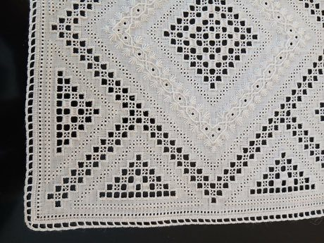

Home / Living Traditions / Mediterranean
Playable heritage gameLefkara Lace
Also known as lefkaritika
Lefkaritika is the white needlework of the village of Pano Lefkara in the Cypriot hills. Makers pull threads out of a square of linen, wrap and stitch the bars that remain into small diamonds, crosses and stars, and finish the edge with a narrow hem of tiny stitches. The geometry is counted, so the cloth repeats evenly in quarter turns.

How to play
- Pick a thread colour and a stitch from the tray under the linen.
- Touch a square to work that stitch: it is repeated on the squares where a quarter turn of the cloth would show it again.
- Copy the small cloth shown above, then press Check.
Rules at a glance
- The cloth repeats in quarter turns, so each stitch you place is also worked on up to three partner squares.
- A square counts only when its stitch and its thread colour both match the cloth you are copying.
- Three stars need a nearly perfect copy; you can undo or clear as often as you like.
About the tradition
Lefkaritika has been made for centuries by the women of Pano Lefkara and nearby villages, and is recognised internationally as living cultural heritage. Its craft names include the drawn-thread work called dafna and the cut-linen style called tayiadha.
Origins
A living tradition passed from person to person; it is not tied to a single dated origin. It belongs to the cultural world of Mediterranean.
Credits
- Pattern design: World Heritage Games (original, in the style of the tradition)
- Photo: LaceDemo1, CC BY-SA 4.0, source on Wikimedia Commons
- Text: CC BY-SA 4.0, World Heritage Games.
Sources

Get the app
Lefkara Lace is one of 9 weaving and lace crafts in the Weaving & Lace of the World app for Android. Live on Google Play. One app, many traditions, no account needed.
More games to play

Celtic knot weave
Ireland +1 · Crafts and makingPlay preview · in the Textile Crafts of the World app
Cross-Stitch Pattern Weaving
Ukraine · Crafts and makingPlay preview · in the Textile Crafts of the World app

Haapsalu lace shawl knitting
Estonia · Crafts and makingPlay preview · in the Weaving & Lace of the World app
Nordic Colourwork Knitting
United Kingdom +2 · Crafts and makingPlay preview · in the Textile Crafts of the World app
Tartan Sett Weaving
United Kingdom +1 · Crafts and makingPlay preview · in the Textile Crafts of the World app